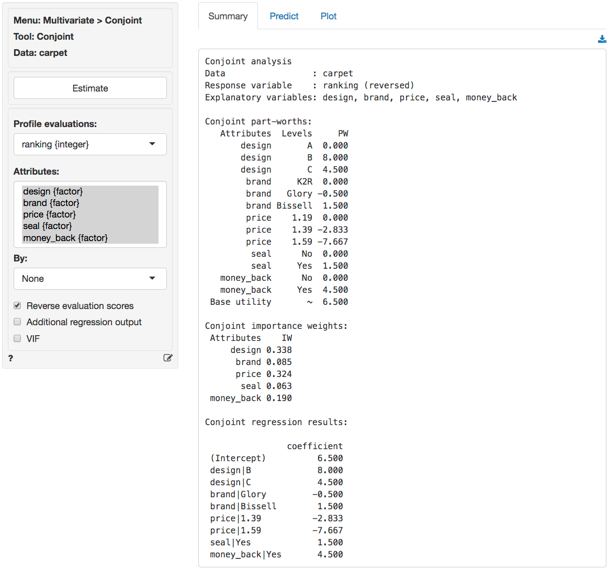
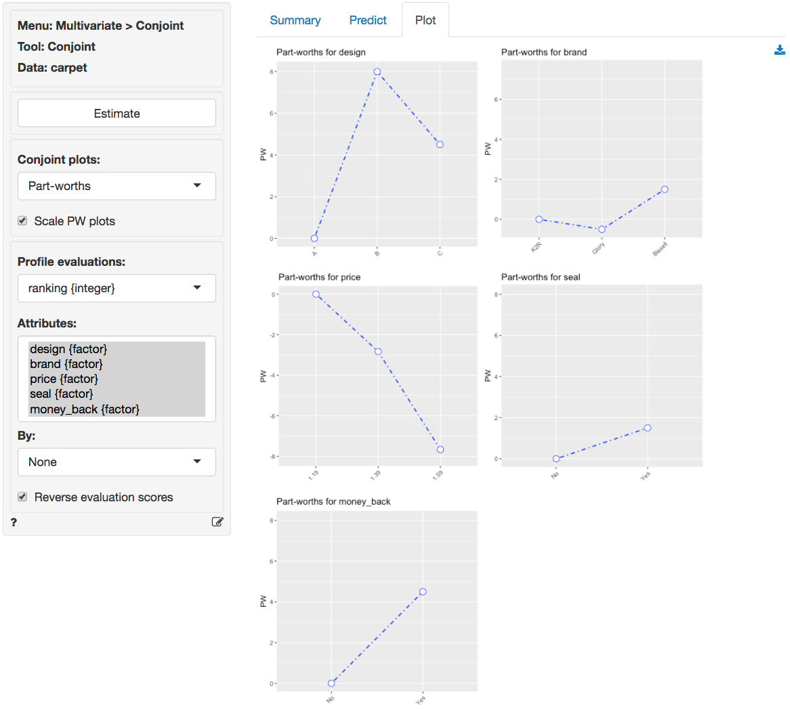
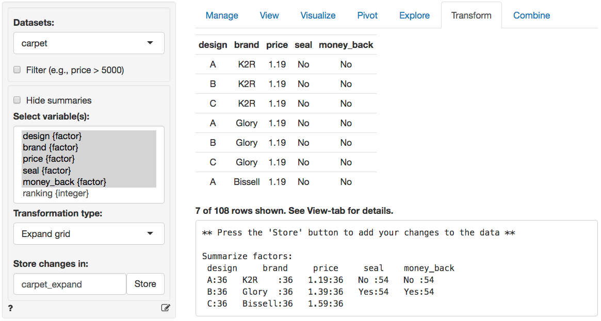
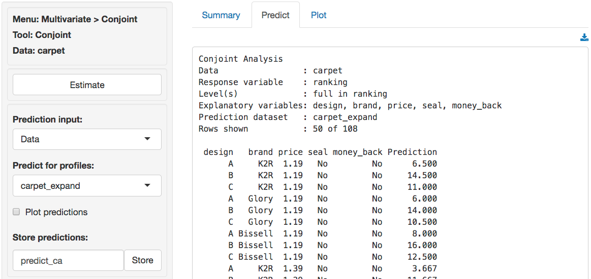
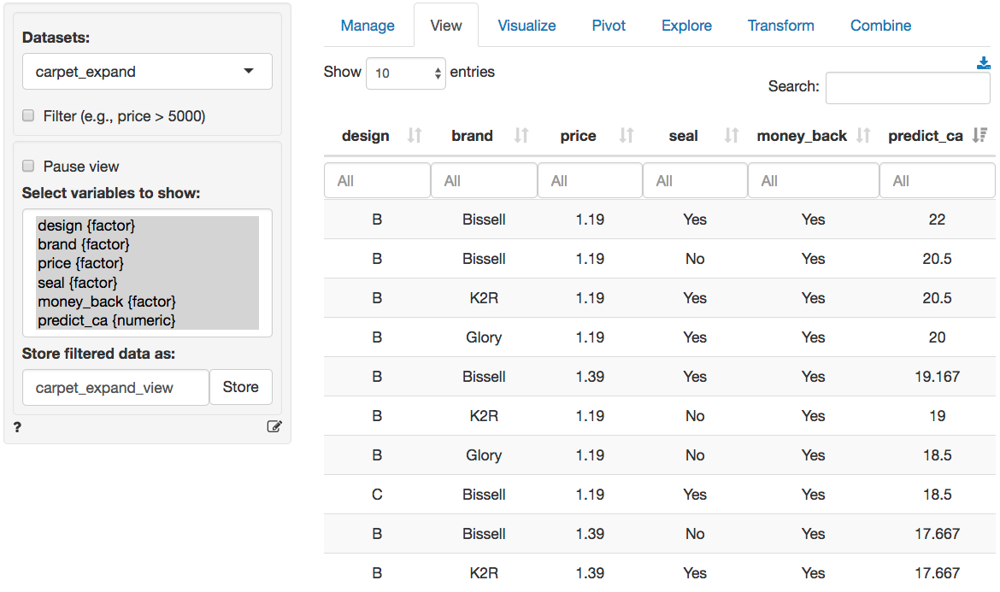

Multivariate > Conjoint > Conjoint
Analyze responses from a conjoint survey
To setup a conjoint study from scratch we need to determine the attributes and attributes levels that should be included. Once that has been done we would typically need to generate a fractional factorial design of conjoint profiles. This is a subset of all possible profiles that could be generated for the set of attributes and levels that were selected (see Design > DOE > Design of Experiments).
Once data is available from respondents their evaluations are analyzed to determine Part Worths (PW) and Importance Weights (IW).
To estimate a model select respondents ratings (or rankings) as the Profile evaluations and select the profile Attributes. Press the Estimate button or CTRL-enter (CMD-enter on mac) to generate results.
Example: Carpet cleaner
A respondent was presented with 18 product profiles for a carpet cleaning product described on five attributes in a conjoint study. To access the carpet dataset go to Data > Manage, select Examples from the Load data of type dropdown, and press the Load button. Then select the carpet dataset.
- design = Package Design (A, B, C)
- brand = Brand Name (K2R, Glory, Bissell)
- price = Price (1.19, 1.39, 1.59)
- seal = Good Housekeeping seal of approval (Yes or No)
- money_back = Money Back Guarantee (Yes or No)
- ranking = Respondent ranking of 18 attributes
Design characteristics:

Based on the attributes, 108 possible profiles could be created (i.e., 3x3x3x2x2 = 108). The respondent was given a set of 18 and was asked to rank the profiles from most preferred (rank 1) to least preferred (rank 18). The first five columns represent the five attributes and the last column is the respondent’s ranking.
- Compute the Variance Inflation Factors (VIF) for the attribute variables. What do you notice? What does this say about the particular set of 18 profiles that was presented to the respondent?
The VIF scores displayed below indicate that the attributes are perfectly orthogonal. In the fractional factorial design profiles were deliberately selected such that all attributes are uncorrelated.
Multicollinearity diagnostics:
design brand price seal money_back
VIF 1 1 1 1 1
Rsq 0 0 0 0 0- Estimate a conjoint model using the respondent’s evaluations as the dependent variable and the attributes as the predictors. Show the complete list of part-worths and importance weights.


- Calculate the predicted utilities for the following options:
- Package A, K2R, $1.19, no GHKS, no MBG
- Predicted Utility based on PWs: 6.5 + 0 + 0 + 0 + 0 + 0 = 6.5
- Package C, Bissell, $1.19, no GHKS, with MBG
- Predicted Utility based on PWs: 6.5 + 4.5 + 1.5 + 0 + 4.5 = 17
- Package B, Bissell, $1.59, with GHKS, with MBG
- Predicted Utility based on PWs: 6.5 + 8.0 + 1.5 - 7.67 + 1.5 + 4.5 = 14.33
- What is the highest predicted utility that can be obtained? What are the characteristics of that option?
- The option with the highest (predicted) utility is: Package B, Bissell, $1.19, with GHKS, with MBG
- Predicted Utility based on PWs: 6.5 + 8.0 + 1.5 + 0 + 1.5 + 4.5 = 22
We can confirm this results in three steps: (1) Create a new dataset with all 36 profiles in Data > Transform using Expand grid, (2) Predict the utility for each of the profiles by selecting the newly created dataset in the Multivariate > Conjoint > Predict tab and storing the prediction in a new variable predict_ca, (3) Sort the new dataset on predict_ca in the Data > View tab. These three steps are shown in the screen shots below
Step 1: Create dataset

Step 2: Predict utilities

Step 3: Sort predictions

Multiple respondents
If profile evaluations are available for multiple respondents and a respondent id variable is included in the dataset we can estimate conjoint results at the individual level by selecting the respondent id from the By dropdown. We can then save the Partworths and/or Importance weights for all respondents to a new dataset in Radiant and use that for segmentation using Multivariate > K-clustering.
Report > Rmd
Add code to Report > Rmd to (re)create the analysis by clicking the icon on the bottom left of your screen or by pressing ALT-enter on your keyboard.
If a plot was created it can be customized using ggplot2 commands or with patchwork. See example below and Data > Visualize for details.
R-functions
For an overview of related R-functions used by Radiant to estimate a conjoint model see Multivariate > Conjoint
The key functions used in the conjoint tool are lm from the stats package and vif from the car package.